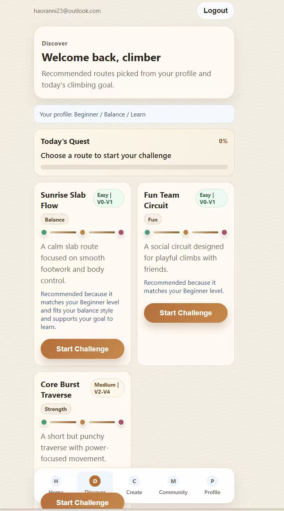
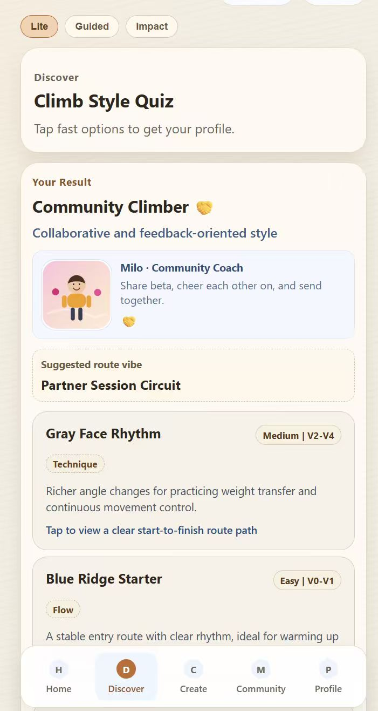
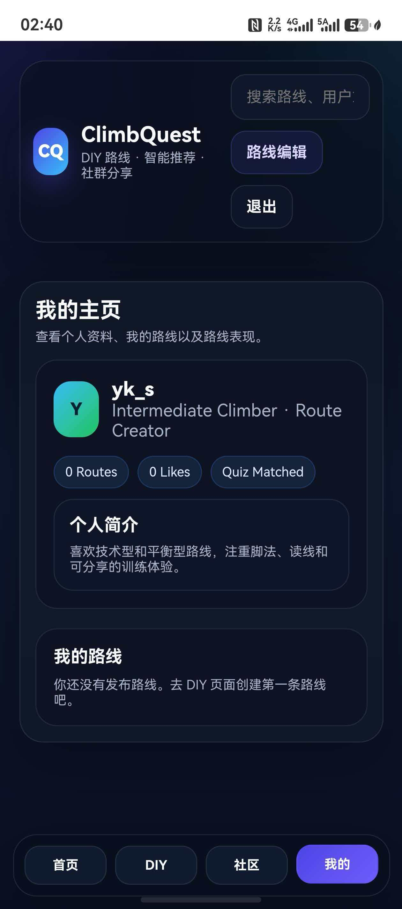
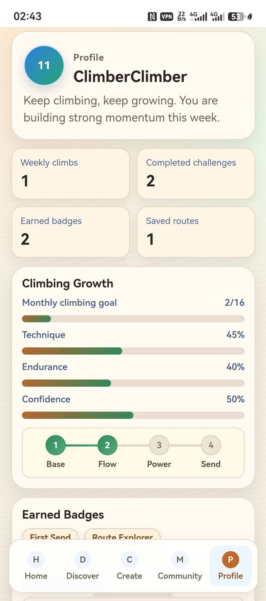

Route Choice Clarity
Can ClimbQuest help users find routes that match their current level and preferences?
Evaluation
Assessing ClimbQuest through staged testing, post-use scores, and refinement directions.
Our evaluation followed a staged process: users first completed an onboarding questionnaire, then completed a baseline task without ClimbQuest, interacted with the ClimbQuest prototype, and finally provided feedback on how the climbing experience changed.
The user journey map helped us identify key moments where climbers experience uncertainty or frustration: route recognition, tool search, product discovery, route design, completion, and sharing. These moments shaped the evaluation focus of ClimbQuest.
Can ClimbQuest help users find routes that match their current level and preferences?
Can ClimbQuest make users feel more motivated after completing or attempting a route?
Can ClimbQuest support post-climb reflection, recording, and community interaction?
| Evaluation Task | Linked Chain | Evaluation Focus |
|---|---|---|
| Task 1 - Route Recommendation | R1 → DG1 → SF1 | Route choice clarity and personalization |
| Task 2 - DIY Route Creation | R2 → DG2 → SF2 | Route creation / recording usability |
| Task 3 - Community Sharing | R3 → DG3 → SF3 | Community motivation, feedback, and sharing |
Profile: Age 22, university student, indoor beginner.
Evaluation relevance: Rin climbs 1-2 times per week and wants routes that match her current level, visible progress after each session, and confidence-building guidance.
Profile: Age 27, working professional, low-frequency climber.
Evaluation relevance: Leo climbs once or twice a month and needs quick guidance, low setup effort, and a clear next action after a long break.
The strongest scores were usability and personalization, suggesting that users found ClimbQuest easy to use and relevant to their climbing preferences. The lower scores for AI assistance accuracy and engagement indicate that future iterations should improve recommendation transparency and strengthen long-term motivational features.
| Requirement | Design Goal | System Feature | Evidence | Result |
|---|---|---|---|---|
| R1 Personalized route guidance | DG1 Reduce route-selection uncertainty | SF1 Personalized Route Recommendation | Personalization 4.91 / 5 | Validated |
| R2 Route recording / DIY route creation | DG2 Increase creative ownership | SF2 DIY Route Creation | Usability 4.94 / 5; evaluation confirms route recording demand | Validated with refinement |
| R3 Community motivation and sharing | DG3 Support social motivation | SF3 Community Sharing & Interaction | Engagement 3.97 / 5; Adoption intention 4.45 / 5 | Partially validated |
To show how user feedback informed refinement, we compared earlier interface versions with refined prototype screens.

Routes appeared without enough recommendation logic.

Persona and route vibe explain the match first.

Profile information was shown, but progress and achievements were not clear.

Progress stats, badges, and growth indicators make achievements easier to see.
Improve rock point identification during AI-assisted route generation.
Explore coach or professional assistance for safer and more reliable route generation.
Explain why a route is recommended and what user profile data influenced the suggestion.
Add moderation or review mechanisms for user-generated routes.
Evaluate the prototype with more climbers of different skill levels and visit frequencies.